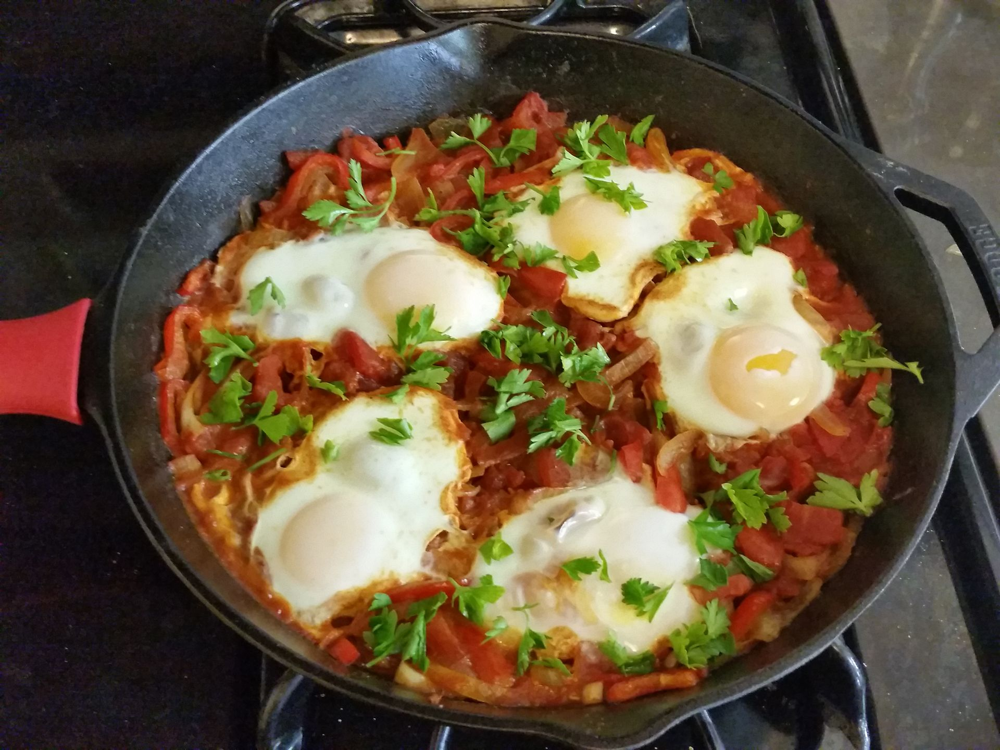

Food for the Divine
Assembly of the best recipes that make your mouth water just from the tought of them.
North African

 Shakshuka
شكشوكة
Shakshuka
شكشوكة
This North African one-dish-meal is so fast, easy, and delicious. Be sure to cook your sauce until the veggies are nice and soft and sweet. Once the eggs go in, you can finish covered on the stove, or just pop the pan into a hot oven until they cook to your liking.
